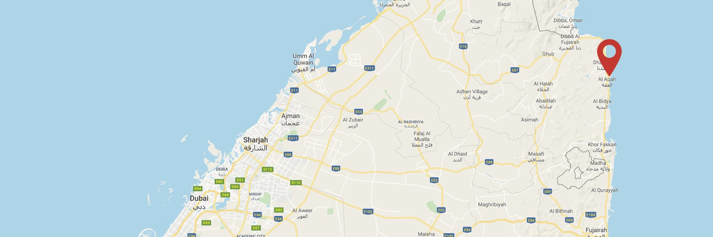

A beautiful view as the sun rises over the ocean - welcome to the east coast. © Photograph by Sean Jahnig
The UAE offers some amazing conditions for surfing and kitesurfing. The biggest challenge is knowing when it is going to work because the storms are irregular and difficult to predict and therefore the forecasting tools that we have available to us in this region are often unreliable. After 16 years of being in the UAE, I can tell you that the only way to know whether it is working or not is to get down to the beach and see for yourself. That either leads to stoke, or disappointment - with the latter being more frequent than we'd all like.
Tim's Reef on the east coast is a magical spot. The swell approaches from the SE and the reef is well positioned to receive it. The east coast doesn't get swell often, but when storms/winds are strong enough it does surprise us. Being a 2-hour drive from Dubai, it is too unpredictable to risk the journey unless you have proof of the conditions which is why people will only go if a) the forecast is really solid or b) they see a picture of the conditions.
Thanks to a few new roads, less than 2 hour drive from Dubai. Courtesy of Google Maps
Being fortunate enough to be self-employed and to live in Sharjah, I'm a bit closer to Fujairah - I can get there in 1hr 20min whenever I see a gap and a potential swell. And you'd be surprised how often there is little swell even though nothing was predicted. There have been some beautiful days where I have surfed alone with no one around - but there have also been many disappointments when I drove all the way for nothing. And so was born the goal to improve the forecasting and monitoring tools... to result in a better stoke vs disappointment ratio.
When it's just you and a few friends out... Jackpot © Photograph by Sean Jahnig
1st to 14th September 2019
After a lot of research I decided that I would invest some money into a portable weather station which would not only help me, but the community. There was no out-the-box solution but i stumbled across a route that was open source with lots of flexibility and that was enough to inspire me. Next, i met with the guys from the Dive Centre at Sandy Beach Hotel (which is 200m down the road from Tim's Reef) and they were kind enough to support and help me get an approval to host the station/camera at the hotel.
15th to 30th September 2019
I purchased the parts and experimented late into the night with lines of code (and even formatted the HDD of my iMac unintentionally in the process) but I eventually got a basic station operational and remotely manageable.
1st to 15th October 2019
Hoffie and I did a few trips down to Sandy Beach Hotel to do the installation. The camera and remote management proved to be pretty stable but the weather sensor wasn't performing well and was losing signal often. At the same time I was working on an interface to view all of the information that was being aquired from different sources. One of the biggest challenges was live video - which is heavy on processing power and data transmission, and to be honest it is an overkill. I started experimenting with timelapses and found it was a lot more reliable and lighter on data and the cpu. Eventually i settled on a single picture every 5-minutes which works well... the long term plan is to create a gallery which will show past pictures as well.
16th to 31st October 2019
Made some modifications to the sensor settings and things are working much better now.
1st November 2019
Sean's Surf Report goes live!
Buy yourself a foil and you'll be stoked on days when others can't even paddle out. © Photograph by Sean Jahnig